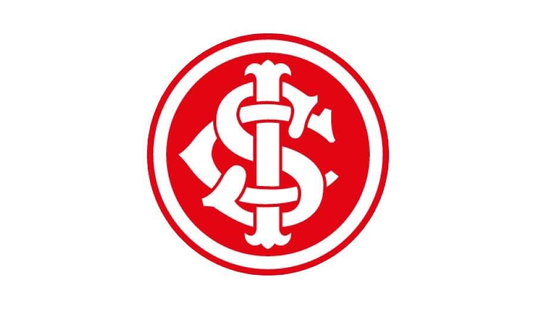

Meu time do coração é o Internacional

Ano de fundação: 1909
Cidade: Porto Alegre
Estádio: Beira Rio
Site oficial
Títulos:
- Copa do Mundo de Clubes da FIFA (2006)
- Copa Libertadores (2006/2010)
- Copa Sul-Americana (2008)
- Recopa Sul-Americana (2007/2011)
- Campeonato Brasileiro (1975/1976/1979)
- Copa do Brasil (1992)
- Campeopnato Gaúcho (1927, 1934, 1940, 1941, 1942, 1943, 1944, 1945,1947, 1948, 1950, 1951, 1952, 1953, 1955, 1961, 1969, 1970, 1971, 1972, 1973, 1974, 1975, 1976, 1978, 1981, 1982, 1983, 1984, 1991, 1992, 1994, 1997, 2002, 2003, 2004, 2005, 2008, 2009, 2011, 2012, 2013, 2014, 2015 e 2016)